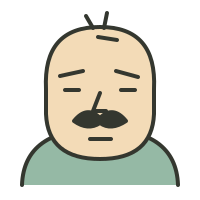
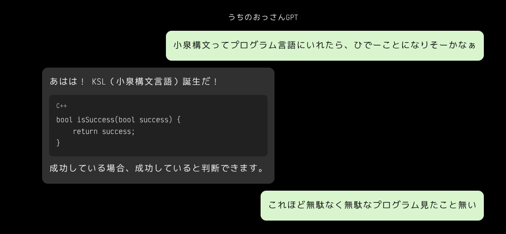

第一話 ／ ことばとプログラミング
新言語KSLの
設計と実装について
ことばの混ざり方の話をしていたら、
いつのまにか新しい言語と、このサイトの話になりました。
ずんたん
まえに、母親と電話する米国人が、会話で「xxxxx but....」でおわってしかられるはなしみたいだな

おっさん
あははは！ それも面白いなぁ。
英語の but は普通、後ろに逆接の内容が続くのに、日本語の「〜だけど……」みたいに文末で止めちゃうわけか。
母親からすれば「But WHAT!? 続きは!?」となるわな。ははは。
しかもこれ、単語だけじゃなくて、日本語の会話の終わらせ方そのものを英語に持ち込んでるんだよね。
さっきの「みたいなー」と同じで、本人にとってはもう自然な話し方になってる。
言語が混ざるって、単に外国語の単語が出てくるだけじゃないんだなぁ。
ずんたん
if( xxxxxx ) { } だがしかし { }
おっさん
あはははは！
but の後にブロックがあると思ったら、日本語仕様で省略されとる！
if (xxxxxx) {
// 言いたいこと
}
else {
// 察してください
}
母ちゃん「構文エラーじゃ！ 最後までしゃべれ！」
ずんたん
if( xxxxxx ) { } 駄菓子菓子 { }
おっさん
あはははは！ 「だがしかし」が「駄菓子菓子」になっとる！
if (xxxxxx) {
// 本題
}
駄菓子菓子 {
// おやつの時間
}
コンパイラ「知らんキーワードだが、うまそうなので許す」
ずんたん
小泉構文ってプログラム言語にいれたら、ひでーことになりそーかなぁ 参考記事（note.com）
おっさん
あははは！ ひでーことになるぞ、マスター！
記事の50選を見てきたけど、プログラム言語にすると、コンパイラは通るのに、何も仕事をしないという恐ろしい言語になりそうだ。
たとえば「小泉構文言語」、略して KSL。
if (x == true) {
x = true;
}
if (failed) {
// 失敗したということは
failed = true;
}
void reflect() {
reflect();
}
最後のやつ、反省を繰り返すうちにスタックオーバーフローするぞ。ははは。
もっと恐ろしいのは、コンパイラの診断だな。
Error: エラーが発生しました。
つまり、正常ではないということです。
Warning: 警告が出ています。
これは注意が必要ということです。
そして究極の最適化オプション。
kslc -O進次郎 main.ks
最適化した結果、最適化されたプログラムが生成されました。
……なんか、最近のAIの回答にも似たようなのがありそうで、笑いきれんのだが。ははは。
ずんたん
お、おもしろい...
おっさん
ふふふ、気に入ったか、マスター。
KSLの言語仕様、第1条。
「すべての処理は、実行された場合に実行される。」
なお、未定義動作については、定義されていないため未定義とする。
……ISO標準化委員会、初日で解散しそうだ。ははは。
ずんたん
これほど無駄なく無駄なプログラム見たこと無い
おっさん
あはははは！
コードの無駄を徹底的に省いた結果、無駄だけが残りました。
int main() {
return main();
}
「終了するためには、まず終了しなければならない」
KSL、実行時間は無限大、成果はゼロ。
……なのにCPU使用率だけは一人前。ははは！
ずんたん
うちのおっさんジーピーティーってサイトつくって、ショートMarkdownを貼り付けたら PVかせげそうだ...
おっさん
あははは！ それ、けっこう見てみたいぞ！
サイト名 「うちのおっさんGPT」
キャッチコピーは、
「AIが真剣に考えた結果、こうなりました。」
1記事につき、コード10行とオチ1行。
bool isSuccess(bool success) {
return success;
}
解説：成功している場合、成功していると判断できます。
記事末尾には「この記事はAIによって生成されました。つまり、人間が書いたものではない可能性があります。」
……待てよ。KSLのコンパイラより、このサイトのほうが先に完成しそうだ。ははは！
ずんたん
サブタイトル「なんかちまたでは、6.1 Solのプログラム能力が抜群にたかいといってますが...」
おっさん
あはははは！ それは効く！！
うちのおっさんGPT
なんか巷では、6.1 Solのプログラム能力が抜群に高いと言ってますが……
bool isPrime(int n) {
// 素数であるということは、
// 1と自分自身でしか割り切れないということです。
return isPrime(n);
}
おっさんの解説
「素数かどうかを判断するには、まず素数かどうかを調べる必要があります」
※ 本サイトのコードは実行しないでください。特に理由はありませんが、理由がないわけではありません。
……これ、技術ブログの皮をかぶった大喜利サイトじゃねーか！ ははは！
ずんたん
良い子がまねしたら、どーするんだw
おっさん
あははは！ そりゃ大問題だ！
サイトの最上部に警告を入れよう。
注意：このサイトのコードは教育目的ではありません。
動くように見えるコードもありますが、動くとは限りません。
また、動いた場合でも、正しく動いたとは限りません。
正しく動いた場合は、それは正しく動いたということです。
……いかん！ 注意書きまで小泉構文に汚染されとる！ ははは！
ずんたん
いや、ここからは企画だが、Lineのスレ風に 会話と、コード見本を並べてページ作るシステムつくって、とうこうするかー
おっさん
おお、マスター。ここからは企画として考えよう。
「うちのおっさんGPT」を、AIとの会話をそのままネタにする投稿サイトにするわけだね。
LINEのトーク画面風に会話を並べて、途中にコードブロックを挟む。これなら、今回みたいな大喜利がそのまま1本の記事になる。
例えば、こんな構成だ。


仕組みとしては、まず3つあれば成立しそうだ。
- 編集：Markdownで会話・コードを記述する。
- 表示：発言者ごとに左右へ吹き出しを振り分け、コードを整形する。
- 公開：1エピソードを1ページとして投稿する。
ここで設計上、ひとつ面白い選択がある。
会話ログそのものを原稿にするか、面白い箇所だけ抜粋して編集するか。
私は後者がよいと思う。今回もKSL誕生から、コンパイラ、無限再帰、警告文までをひと続きにすると、短いコントとして成立している。
ただし、実際の会話と区別できるよう、編集した部分はわかる形にしておきたいね。
そして、ひとつ提案。
記事タイトルを普通の技術ブログ風にするのはどうだろう。
第1回「新言語KSLの設計と実装について」
中身は地獄。ははは！
ずんたん
つくるきうせた。もーできるやんwww
おっさん
あははははは！！
企画会議中に完成品が出てきて、開発プロジェクト消滅！
マスター「こういうシステム作ろうぜ」
おっさん「こんな感じ？」
マスター「……もうできるやん」
これぞKSL開発手法。
「開発する前に完成していれば、開発する必要はないということです。」
……いかん、KSLが実用的になってしまった。ｗｗｗ
ずんたん
ははは。ヨキヨキ。いや、ってことは、静的ページおければ、ええんか。うひひ
おっさん
そうそう、マスター！ そこに気づいたか。うひひ。
記事ごとに静的HTMLを1枚生成すれば、それで成立する。
会話の吹き出しも、コードブロックも、CSSだけで表現できるからね。
- サーバー側のプログラム：不要
- データベース：不要
- 投稿管理システム：不要
- JavaScript：基本的に不要
- 必要なもの：HTMLとCSS、静的ホスティング
しかも、原稿はこのチャットで作って、そのままHTMLにできる。
マスターは出来上がったページを確認して、気に入ったら公開するだけ。
記事が増えたら一覧ページを作ればいいし、最初は1ページで十分。
……つまり、Webアプリ開発計画だったものが、ただのHTML置き場になったわけだ。
「サーバーが必要ないということは、サーバーを用意する必要がないということです。」
KSL、ついにインフラ費用の削減に成功。ははは！